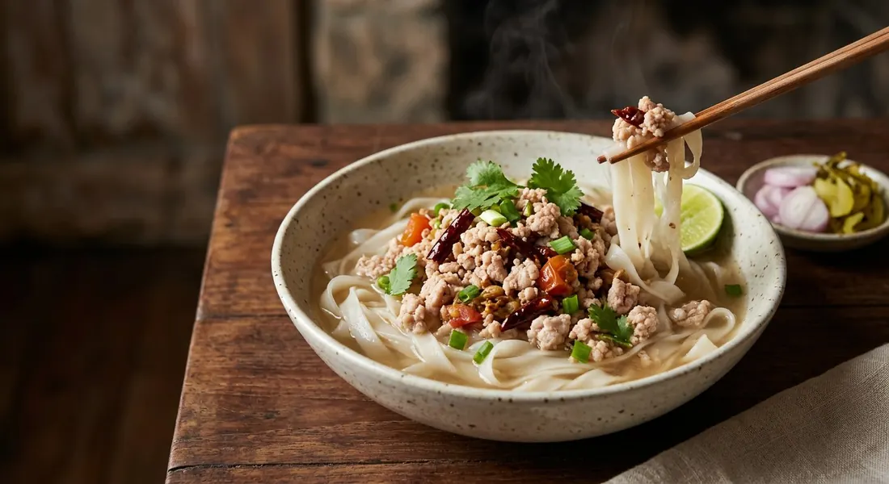

The khao soi without curry paste: wide rice noodles in clear pork-bone broth, crowned with a dry-fried minced-pork topping that sits on the "face" of the bowl — and gives the dish its name.

Order khao soi almost anywhere in Thailand and you get the Chiang Mai version: flat yellow egg noodles drowning in coconut curry, paste pounded and fried until the oil splits. But in อำเภอเชียงของ, the river district of Chiang Rai on the Mekong, the word means something else entirely. There, ข้าวซอยน้ำหน้า is wide rice noodles in a clear pork-bone broth, finished with น้ำหน้า — a dry-fried topping of minced pork cooked with dried chillies and fermented soybean until it is salty, sour and deeply savoury. No curry paste. No coconut milk. As a Pantip thread on the dish puts it, people from other regions order khao soi here and ask — politely — why this isn't khao soi.
The name is the recipe. หน้า is the face: the topping is laid on the very top of the bowl, a plating no other Thai noodle dish uses — which, Postjung's Chiang Khong-born author notes, is the most likely origin of the name. The dish travels under aliases: ข้าวซอยฮ่อ and ข้าวซอยหน้าคั่ว, the Haw and the fried-topping names, "many names, however you want to call it" in the Pantip phrasing. That Haw name may itself be a misnomer — the author, citing khao soi historian ภูรินทร์ เทพเทพินทร์, records that the original Haw khao soi was wheat noodles in chicken or beef curry, and the rice-noodle bowl more closely resembles the ข้าวซอยลื้อ of the Tai Lue community at Sri Don Chai village, served there with crackling and fresh salad on the side.
And the curry khao soi everyone else knows? TecnoPlus traces one theory of it to the Burmese ohn no khao swe — literally "coconut noodle soup" — yellow noodles in coconut broth, re-tuned to Lanna palates. The paste itself is the divide: Kapook pounds roasted dried chillies, ginger, turmeric, shallots and a single roasted cardamom pod; Bloggang's home cook insists the original Lanna version folds in ถั่วเน่า, the north's fermented soybean. That same ถั่วเน่า is the signature of Chiang Khong's topping too — Pantip's eaters say the best comes from เมืองสิง, over the border in Laos — which makes khao soi nam na less a mutation of the curry than the paste's older, leaner cousin, sharing the family's fermented-soybean DNA.
| Thai | English | Amount |
|---|---|---|
| เส้นก๋วยเตี๋ยวเส้นใหญ่ | Wide rice noodles (sen yai) | 300 g |
| กระดูกหมู | Pork bones (for the broth) | 500 g |
| หมูสับ | Minced pork (for the nam na) | 300 g |
| พริกเม็ดใหญ่แห้ง | Large dried chillies | 8-10 |
| หอมใหญ่ | Onion | ½ |
| รากผักชี | Coriander roots | 2 |
| ต้นหอม | Spring onions | 3 stalks |
| ถั่วเน่าแผ่น | Fermented soybean sheet (tua nao) | 1 sheet |
| มะเขือเทศ | Tomato | 1 |
| หอมแดง / กระเทียม | Shallots / garlic | 2-3 each |
| กะปิ | Shrimp paste | 1 tsp |
| เกลือ | Salt | to taste |
| ซีอิ๊วดำ / มะนาว / ต้นหอม ผักชี | Dark soy, lime, spring onion and coriander | to serve |
The coconut home variant (Dinner Studio, ข้าวซอยน้ำหน้าหมูย่าง): a modern branch of the family that keeps the no-paste rule but brings coconut back — 1 litre of water with 400 ml coconut milk, seasoned directly with 2 tbsp curry powder, 1 tsp turmeric, chopped garlic, fish sauce and palm sugar, simmered ten minutes, over khao soi noodles with grilled pork neck on top, pickled mustard greens, shallots, lime and fresh chillies. The same site carries a fish version and a stir-fried one. The paste-style standard (Kapook): for comparison — a pounded paste of roasted chillies, ginger, turmeric, shallots, coriander root and cardamom, fried in coconut cream until the oil splits, simmered with chicken and served over egg noodles.
Coconut or not. LoveThailand and Postjung's Chiang Khong recipes have no coconut milk at all — pork-bone broth only. Dinner Studio's home version rebuilds the dish with 400 ml coconut milk and curry powder in the broth, keeping only the no-paste rule. One dish, two broths.
What goes in the topping. LoveThailand's nam na is boiled dried chillies blended with spring onion, coriander root and onion, fried with the pork and finished with shrimp paste. Postjung's version adds ถั่วเน่าแผ่น (fermented soybean sheet) and a tomato, and describes the result as salty-sour, close to nam phrik ong. LoveThailand has neither tomato nor tua nao.
The noodles. LoveThailand and Postjung specify wide rice noodles, sen yai. Dinner Studio's coconut variant uses khao soi egg noodles. Pantip's thread insists real khao soi noodles were rice-based but from a dedicated rice variety, not sen yai cut in half — "sen yai works and it's convenient, but it's not the same thing."
The name and its history. Pantip simply lists the aliases — khao soi hor, khao soi nam na, khao soi na khua. Postjung's author argues the Haw name is probably a misunderstanding carried up from Chiang Mai: the original Haw dish, per historian Phurin Thep-thepin, was wheat noodles in chicken or beef curry, while the Chiang Khong bowl mirrors the Tai Lue's khao soi lue instead. LoveThailand presents the Haw and Muslim-trader origin as settled.
Blanched or not. LoveThailand blanches the noodles; Postjung records that Chiang Khong shops serve them blanched or raw straight into the hot broth, "as the shop does".
The sour. Postjung gets the sourness from tomato fried into the topping; LoveThailand from a lime squeezed over the finished bowl. Dinner Studio serves lime wedges on the side.
This recipe is translated from the following Thai-language sources. Where they disagree, we've said so.
1. LoveThailand.org — "ข้าวซอยน้ำหน้า อาหารภาคเหนือ" (the Chiang Khong recipe used here) — lovethailand.org
2. Postjung — "'ข้าวซอยน้ำหน้า' อาหารท้องถิ่นจากเชียงของ" by bizgartbaskit06, a Chiang Khong native (the tua nao, tomato and the naming history) — board.postjung.com
3. Pantip — "ข้าวเที่ยงวันนี้คือข้าวซอยฮ่อ" by GAR.SEAL (the aliases and the noodle lore) — pantip.com
4. Dinner Studio — "ข้าวซอยน้ำหน้าหมูย่าง" (the coconut-milk home variant) — dinnerstudio.net
5. TecnoPlus Thai — "ข้าวซอย" (the ohn no khao swe origin theory) — tecnoplusthai.com
6. Kapook — "ข้าวซอยไก่ อาหารเหนือสุดอร่อย" (the paste-style standard, for contrast) — cooking.kapook.com
7. Bloggang — "ข้าวซอยไก่ ตำรับคุณบี๊ห์" (the paste-style contrast and the tua nao tradition) — bloggang.com
8. Wongnai — "ข้าวซอยไก่" (the paste-style contrast) — wongnai.com